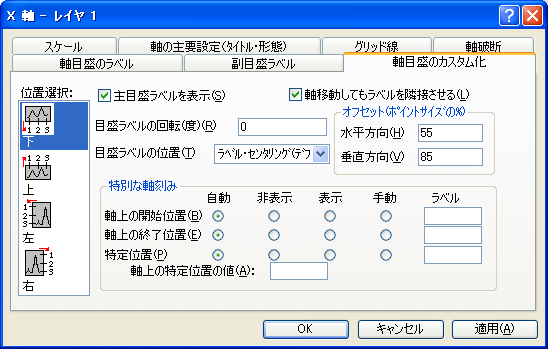

内容 |
| 水平方向 |
これは通常 (下または上の)X軸を表します。ただし、X軸とY軸を交換している場合(｢グラフ操作：X軸とY軸の交換｣メニューコマンド)や、グラフの種類が横棒、浮動横棒、積み上げ横棒の場合は(左または右の)Y軸を表します。 |
|---|---|
| 垂直方向 |
これは通常 (左または右の)Y軸を表します。ただし、X軸とY軸を交換している場合(｢グラフ操作：X軸とY軸の交換｣メニューコマンド)や、グラフの種類が横棒、浮動横棒、積み上げ横棒の場合は(下または上の)X軸を表します。 |
| Z軸 |
これは、デフォルトで、前Z軸および後Z軸です。 |
| 下 |
これは、デフォルトで、下X軸です (X軸とY軸を交換していたり、横棒グラフ系のグラフを編集している場合を除く)。 |
| 上 |
これは、デフォルトで、上X軸です (X軸とY軸を交換していたり、横棒グラフ系のグラフを編集している場合を除く)。 |
| 左 |
これは、デフォルトで、左Y軸です (X軸とY軸を交換していたり、横棒グラフ系のグラフを編集している場合を除く)。 |
| 右 |
これは、デフォルトで、右Y軸です (X軸とY軸を交換していたり、横棒グラフ系のグラフを編集している場合を除く)。 |
| 前 |
これは、デフォルトで、前Z軸です。 |
| 後 |
これは、後ろのZ軸を表します。 |
軸の属性を編集し終えたら、軸位置選択リストボックスから適切なアイコンを選択して、グラフの別の軸を編集することができます。選択した設定をグラフに適用するのをやめるには、編集中にキャンセルボタンをクリックします(適用ボタンを押す前に)
『主目盛ラベルを表示』チェックボックスにチェックを付けると、軸の主目盛ラベルが表示されます。この制御は、『軸目盛のラベル』タブや『副目盛ラベル』タブからでも可能です。
Originでは、目盛ラベルを回転して表示することが可能です。ラベルを反時計周りに回転させるには、このテキストボックスに正の値を入力し、時計周りに回転させるには、負の値を入力します。
｢軸刻みのすぐ右隣｣では、目盛ラベルの左端が軸の主刻みに揃います。
｢軸刻みの中間｣では、目盛ラベルは隣り合う主刻みの真ん中に置かれます。
「ラベル・センタリング(デフォルト)」では、目盛ラベルは主刻みに中心を揃えて置かれます。
軸と目盛ラベルを常に隣接させるには、このチェックボックスにチェックをします。このチェックボックスがチェックされていない場合、軸の位置を変更してもラベルはデフォルト位置に残ってしまいます。
軸に対する目盛ラベルの相対的な位置を、『水平方向』と『垂直方向』のテキストボックスに入力してください(100% =フォントの幅)。
各軸、最大3つまでの目盛ラベルにつき、その位置 (『軸上の開始位置』、『軸上の終了位置』、『特定位置』) を指定してカスタム化することができます。
| 自動 |
目盛ラベルに関するデフォルトが適用されます。 |
|---|---|
| 隠す |
この軸値の位置に 表示されている目盛ラベルを非表示にします。目盛ラベルが表示されていない場合は、何も起こりません。 |
| 表示 |
この軸値の位置に 表示されている目盛ラベルを非表示にします。目盛ラベルが表示されていない場合は、何も起こりません。 |
| 手動 |
このグループの『ラベル』テキストボックスの内容を軸に表示します。『ラベル』テキストボックスの表現に現在の目盛ラベルの内容を含めるには、%1表記を使います。例えば、現在の目盛ラベルが｢19｣の場合に｢1999｣と表示するには、『ラベル』テキストボックスに %199と入力します。 計算式内に現在の目盛ラベルの内容を含めるには、 $(x) 表記を使います。例えば、現在の目盛ラベルが｢99｣の場合、に｢1999｣と表示するには、$(1900+x)と入力します。 |
『特定位置』ラジオボタンおよび『軸上の特定位置の値』テキストボックス
軸の『軸上の特定位置の値』テキストボックスで指定された軸上の位置で、特定位置の目盛ラベルを表示したり、非表示、代替ラベル表示したりします。Originは、必要に応じて、この位置に主刻みを追加します。